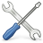
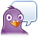
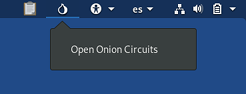
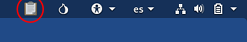
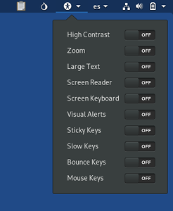

The desktop environment used in Tails is GNOME. This page describes some important features of the desktop in the context of Tails.
Top navigation bar
In the upper left corner of the screen there are two menus:
- the menu
- the menu
Applications menu
The menu provides shortcuts to the included software and to GNOME configuration utilities.
: to access the GNOME Desktop Help choose

:
to change various system settings such as keyboard, mouse and touchpad,
or displays choose
To learn about the many keyboard shortcuts in GNOME, open the Settings utility and choose ▸ .
By default, any such customization is reset when shutting down Tails. Read the
documentation on the Persistent Storage to learn which configuration can be
made persistent across separate working sessions.
:
to manage your OpenPGP keys choose
:
to know the version of Tails that you are currently running, choose
Favorites submenu
In the submenu, a few shortcuts allow you to launch the most frequently used applications:
Tor Browser to browse the web anonymously and uncensored
See our documentation on browsing the web with Tor Browser
See our documentation on browsing the web with Tor Browser
Tor Connection to connect to the Tor network
See our documentation on connecting to Tor
See our documentation on connecting to Tor
Configure persistent volume to create and configure a Persistent Storage on your Tails USB stick
See our documentation on the encrypted Persistent Storage
See our documentation on the encrypted Persistent Storage
Tails documentation to open an offline version of the Tails website and documentation, embeded in Tails
WhisperBack Error Reporting to report problems about Tails to our team
See our documentation on reporting an error
See our documentation on reporting an error
Tails Installer to clone Tails to another USB stick
Thunderbird email client
See our documentation on emailing and reading news with Thunderbird
See our documentation on emailing and reading news with Thunderbird
KeePassXC password manager
See our documentation on managing passwords with KeePassXC
See our documentation on managing passwords with KeePassXC

Pidgin Internet Messenger
See our documentation on chatting with Pidgin and OTR
See our documentation on chatting with Pidgin and OTR
Files browser
See our documentation on the Files browser
See our documentation on the Files browser
Places menu
The menu provides direct access to different folders and storage media.
Tor status and circuits
The Tor status icon and Onion Circuits allow you to view the status of Tor.

See our documentation on Onion Circuits.
OpenPGP applet
Using the OpenPGP Applet, you can encrypt and decrypt the clipboard using OpenPGP.

See our documentation on OpenPGP Applet.
Universal access
The universal access menu allows you to activate the screen reader, screen keyboard, large text display, and other accessibility technologies.

See our documentation on accessibility.
Keyboard layouts
The keyboard layout menu allow you to change the keyboard layout and input method for non-Latin scripts.

System menu
In the top-right corner of the top navigation bar, the system menu allows you to manage your settings, connect to a Wi-Fi network, and restart your computer.

Networking
From the system menu, you can choose which Wi-Fi network to connect to.
See also the documentation on connecting to a network.
System settings
Click on the  button to edit your system settings.
button to edit your system settings.
These settings will not be saved when you restart Tails.
Screen locker
Click on the  button to lock your screen with a password.
button to lock your screen with a password.
If you set up an administration password when starting Tails, you can unlock your screen with your administration password.
Your screen will automatically lock after some time if you have set up an administration password. To disable this behavior, execute the following command:
gsettings set org.gnome.desktop.screensaver lock-enabled false
Otherwise, you can set up a password to unlock your screen when locking your screen for the first time.

Suspend
Click on the button to suspend your computer.
While suspended, your computer is not computing anymore but is still powered on, like if it was standing still but still alive.
To resume from suspend and go back to the Tails desktop, push the power button of your computer.
If you remove your Tails USB stick while suspended, your computer will not shut down immediately and will only shut down when resuming.
An attacker with physical access to your computer and capable of finding your screen locker password or setting up a cold-boot attack can compromise your Tails while suspended.
For more security, shut down Tails entirely.
Restart
Click on the button to restart your computer.
Shutdown
Click on the button to shut down your computer.
Activities overview
To access your windows and applications you can either:
- Choose .
- Throw your mouse pointer to the top-left hot corner.
- Press the windows key on your keyboard.
You can see your windows and applications in the overview. You can also start typing to search your applications, files, and folders.
Desktop shortcuts
Tails documentation to open an offline version of the Tails website and documentation, embeded in Tails
Report an error to report problems about Tails to our team
See our documentation on reporting an error
See our documentation on reporting an error
Trash, where the "deleted" files are
moved
The Files browser
To open the Files browser, you can either:
Choose .
Open one of the shortcuts from the menu.

To connect to a remote SFTP (SSH File Transfer Protocol) server:
Choose Other Locations in the sidebar of the Files browser.
Specify an SFTP server in Connect to Server at the bottom of the right pane. For example:
ssh://user@example.com/
Click Connect.